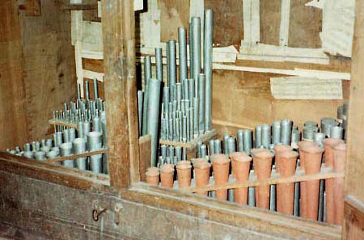

|
Trompeta Bastarda Spanish Trompeta Recordata Spanish |
The Trompeta Bastarda was a Spanish Trumpet with half-length resonators, as opposed to the Trompeta Real which had full-length resonators. Like many Spanish reeds, the Trompeta Bastarda was often mounted en chamade. The Spanish word bastarda means a piece of ordnance (i.e. a cannon).
Trompeta Recordata is mentioned only by Maclean, who describes it only as an 8' Trumpet with half-length resonators. Without further information, we assume it to be synonymous with Trompeta Bastarda. Its etymology is not known. Contributions welcome.
See Tromba Bastarda.
All known examples of Trompeta Bastarda are given below. No examples of Trompeta Recordata are known. Contributions welcome.
Trompeta Bastarda 4' (treble), 2' (bass); positive or choir organ, Santa Cruz, Coimbra, Spain; late 1500's.
Trompeta Bastarda 8', Orgaño de Eco; Braga Cathedral, Gospel side, Braga, Spain; Simón Fontanes 1737.
Trompeta Bastarda 8', Organo de Eco (left); Santa María la Real, Xunqueira de Ambía, Orense, Spain; Valdonado 1759. This example has ceramic resonators, as can be seen in the photo below (reproduced courtesy of Rick Berg). While Osiris lists it at 8', a different source lists it at 4', though this may have been based on the resonator length rather than the speaking pitch.

|
Original website compiled by Edward L. Stauff. For educational use only. TrompetaBastarda.html - Last updated 26 March 2002. |
Home Full Index |